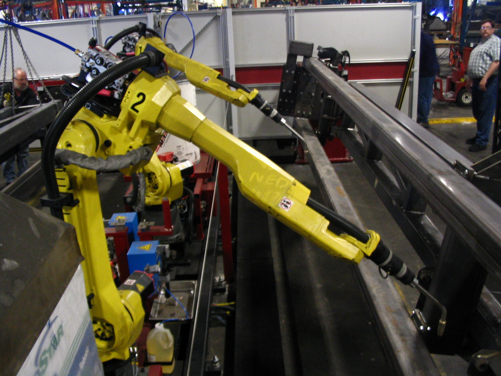

Executive Summary
On July 16, 2026, the Japanese government backed Noetra — a consortium formed by Sony, SoftBank, NEC, and Honda — with up to ¥1 trillion over five years. The goal of this arena, where 44 investment institutions stand together, is not one more large language model. It is a robot's brain that runs on sensor records from factories, hospitals, and stores: the "Real-world Native AI" that the roadmap targets for 2030. This report follows what exactly that money is trying to buy — and why the thing it wants cannot be bought with money alone.
The crux is the nature of the data. Unlike language corpora scraped off the web, the experience data of the physical world — the record of contact, motion, and failure — cannot be scraped, and it cannot be bought from a data broker. Add up all the robot manipulation data on Earth and it still trails internet text by several orders of magnitude, and that gap is structural rather than incremental. So Japan is betting not on scale but on physical data that accumulates only within its own borders. The twist that is the real condition of this bet: even a ¥1 trillion pour won't build a robot's brain without quality and curation.
For Pebblous readers, the announcement reduces to a single sentence. Sovereign AI's front line has moved from language to the physical world, and physical data you can't buy has become national wealth. The moment a state designates on-site sensor logs as a strategic asset, the work of turning scattered data into a learnable form becomes national infrastructure. Who owns the data will redraw the next decade's industrial leadership.
¥1 trillion
Five-year government backing
About $6.16B — roughly 1/80 the scale of US Stargate
27,500
Rubin GPUs in the AI factory
140MW, targeting June 2028 operation (per SoftBank)
~300K hours
World's robot manipulation data
Orders of magnitude below ~300T text tokens (industry est.)
10 million
Robot deployment target by 2040
Across 18 industries — vs. IFR's ~4.66M operational stock
What ¥1 Trillion Is Trying to Buy — Anatomy of Noetra
Start by correcting one number. The ¥1 trillion behind Noetra is government backing for this consortium specifically, disbursed at its maximum over five years. The often-quoted "¥10 trillion" is Japan's cumulative 2030 investment target for AI writ large, cloud included — a separate line item from Noetra. The dollar conversion needs care too. ¥1 trillion is about $6.16B; the "$61.6B" some outlets printed shifts the decimal by one place and is simply wrong. From here on, this report writes ¥1 trillion (about $6.16B) throughout.
Noetra is anchored by Sony, SoftBank, NEC, and Honda, joined by 44 investment institutions. Each large company contributes not only capital but the sites it knows best — the data and know-how flowing out of electronics, telecom, and manufacturing. What the consortium wants to build is not a model that stitches text together but a multimodal physical AI that fuses several sensor streams (vision, audio, touch, motion) into one and acts directly in the physical world. In the announcement, SoftBank repeatedly stressed the message that "the data Japanese industry holds is the source of its competitiveness."
The money itself is unusual. The ¥1 trillion is not a grant that lands in a bank account at once but conditional, matching-style funding. First, ¥387.3B is secured up front in years one and two from GX (green transformation) transition bonds; from year three, later tranches are decided on a stage-gate basis that reviews whether roadmap milestones have been hit. Because climate-labeled bonds flow into AI and robotics infrastructure, a greenwashing debate over the source of funds travels alongside it. The design is that the state provides the money, but opens the door only as far as results come through.
One of the physical things that money points to is compute. SoftBank has said it is targeting a June 2028 launch for a 140MW AI factory housing 27,500 of NVIDIA's next-generation Vera Rubin–class GPUs. But avoid the misreading here. Even fully stocked with GPUs at that scale, the factory is a half-empty vessel without physical data to feed it. That is why the Noetra roadmap lays its compute construction-and-launch schedule right alongside its data-and-model stages. The timeline below overlays that three-stage roadmap onto the compute schedule.
Noetra roadmap — from reasoning models to Real-world Native AI
Sources: Honda newsroom (2026-07-16), AI Weekly. NEC's original press release was access-restricted (HTTP 403), so only the Honda / AI Weekly cross-verified details are reflected.
The point of this section is one thing. The ¥1 trillion is not money to buy a model; it is money to buy "the experience a robot has in the world." The compute, the anchor companies, the conditional funding structure all point in one direction — securing and refining that experience data. And that experience is exactly the asset no amount of money can buy on the market.
Why a Robot's Brain, Not Another Language Model
The first question that comes to mind is this: with the world pouring tens of billions into large language models, why did Japan skip that race and pick a robot's brain instead? The answer is cold strategic arithmetic. In the language-model race, US big tech has already locked in the lead with overwhelming data, capital, and talent, and the board is tilted too far for a latecomer to catch up the same way. Rather than a race it cannot win, Japan moved the game to one where it holds the advantage.
The substance of that advantage is manufacturing. Japan is a world power in the production of industrial robots and in core-component and precision-control technology. Not the fab, but the factory floor, the precision instruments, and the skilled production processes themselves are the assets Japan has stacked up over decades. The physical AI that moves a robot draws its data from exactly this base. If the raw material of a language model is web text, the raw material of physical AI is the site where something is actually built and manipulated — and Japan is among the countries that hold that site most densely.

The second piece of arithmetic is sovereignty. Japan depends on foreign clouds for much of its AI compute. Industry estimates put its domestic self-sufficiency in advanced GPUs at around 30%, while its digital-services trade deficit has widened to the ¥5 trillion range per year. As long as language models run on someone else's cloud, both the data and the model sit outside sovereignty. Physical data from factories, hospitals, and stores, by contrast, is generated and accumulated only inside national territory in the first place. Moving the front line to physical AI is also a declaration to fight on the layer where the nation holds the source, not the layer where it depends on others.
The phrase Noetra planted as its roadmap's destination — "Real-world Native AI" — compresses this calculation. Not an AI born on the web that understands the web, but an AI born in the real world that understands and acts in it. The goal is not the ability to link language smoothly but the ability to pick up a cup, fit a part, and learn from failure. Only when aimed at that goal do Japan's manufacturing legacy and localized physical data become not a weakness but a decisive weapon.
In short, Japan routed around a language race it had already lost and moved the board to a physical race where it holds the edge. It is a decision where the legacy of a manufacturing power, physical data that accumulates only at home, and a thirst for compute sovereignty all converge in one direction. The catch is that this physical data is scarce in a fundamentally different way from language data — which is the subject of the next section.
Why Data You Can't Buy Becomes National Wealth
This is the intellectual heart of the piece. Why do we say physical data "can't be bought"? Because of three properties. First, non-substitutability: records of contact, motion, and failure exist only when a robot actually collides with the world. Second, locality: they occur only in a specific factory, on specific equipment, in a specific work environment, and accumulate only at that site. Third, domain dependence: data gathered on one line does not transfer cleanly to another. If web text is an asset that gets copied, scraped, and resold, physical data sits at the opposite end of that spectrum.
The size of the problem is sharper in numbers. Language models scrape trillions to hundreds of trillions of tokens from the web. By contrast, all the robot manipulation data in the world adds up to roughly 300,000 hours, by the industry's rough consensus. In between sits internet video (about a billion hours), but that too differs in character from manipulation data a robot has experienced firsthand. Below, these three sources are overlaid on a log axis. Because the units differ, this is not an absolute comparison but a picture meant to show the "staircase of orders of magnitude."
Order-of-magnitude gap across data sources (log scale, differing units)
Sources: industry and VC estimates (State of Robotics 2026, SCSP/ISF Voices, etc.). Hours and tokens use different units, so this is a conceptual chart of the order-of-magnitude gap, not an absolute comparison.
So why not just buy the shortfall? Here physical data parts ways decisively with chips or cloud. Real-world robot data is a labor-intensive asset, built one demonstration at a time by people teleoperating robots or hand-demonstrating tasks. Collection costs have fallen fast — from about $340 per hour for teleoperation (2024) to the $130 range (2025) and $118 (early 2026), a drop of more than 60% in two years. Yet the data is still scarce, because beneath the unit price lies a physical bottleneck that does not disappear: $50K–$150K per manipulation rig, and fewer than a few hundred demonstrations one worker can produce in a day. VCs such as Bessemer estimate the industry's total robot-data collection cost over the next two years at more than $3B (a VC estimate).
Teleoperation data-collection cost — down 60%+ in two years
Sources: State of Robotics 2026, Bessemer Venture Partners (VC estimate). Per-hour teleoperation rate; excludes rig and labor overhead.
Even securing scale is not the end. Open X-Embodiment, the largest open robot dataset, gathered over a million trajectories and some 500 skills across more than 22 platforms — yet in practice the data skews heavily toward a handful of specific robots. A large total does not mean you can use it evenly (Open X-Embodiment, arXiv:2310.08864). That is why the empirical consensus in the 2026 robotics-foundation-model camp points to curation, not scale. Above roughly 7B parameters, choosing the data matters more for performance than growing the model. The result that a 7B model fine-tuned on a well-curated 500 demonstrations beats a poorly curated 70B model on most manipulation benchmarks compresses the point.
Physical data is expensive, absolutely scarce, and without quality it never becomes an asset. Because all three hold at once, it is the state — not the market — that steps in directly. "You can't buy it" is not a metaphor but a fact backed by orders of magnitude and price tags. And the ability to instead manufacture the thing you can't buy — collection, curation, quality validation — is the national wealth of this era.
Korea Bet on Hardware, Japan Bet on Data
Faced with the same physical AI, every country bets on a completely different point. Overlaying four of them brings Noetra's position into focus. Japan chose a supply-side strategy, with the government pouring matching funds directly into securing physical data. That the state intervenes in the production of the raw material itself makes it the most unusual case.
Korea is closer to the opposite picture. It has committed roughly ₩1,350 trillion over the coming decade (₩800T for semiconductors, ₩550T for AI data centers), yet the budget allotted to robot experience data and quality standards is effectively a rounding error. Divide the roughly ₩1.4 trillion nominally tagged for robot-training grounds and data factories into the total and the ratio is about 964 to 1. Capital overflows while the "data" line item is all but erased from the ledger — a point Pebblous already flagged in Korea's ₩1,350 trillion physical-AI investment and its data gap. Why the standard for the behavioral data a robot must accumulate with its body matters as much as the hardware sits in the same context. The difference between Japan and Korea ultimately comes down to "does the state step in directly to secure the data?" versus "is there capital but no data line item?"
The US and Singapore are yet another axis. In the US, it is not the government but private capital that flows into physical data on its own. Giant tech capital bets directly on robot foundation models and data pipelines, and the market pulls in the raw material without a national plan. Singapore sells not the size of the money but proving grounds and governance. Its strategy puts trustworthy data-and-AI infrastructure itself forward as a national product — the approach examined in Singapore's AI trust infrastructure. The table below sorts, at a glance, where each of the four countries placed its bet.
| Country | Scale · actor | Character of the strategy | Stance toward data |
|---|---|---|---|
| Japan | ¥1T / government matching + big-company consortium | Supply-side — the state intervenes directly in data production | Securing physical data named as a national goal |
| Korea | ~₩1,350T / public-private (hardware-centric) | Infrastructure-side — focus on fabs, data centers, mass production | Data line item ~0.1%, stuck in the language of "collection" |
| United States | Large-scale private capital (not a national plan) | Market-side — capital moves into data on its own | Data pipelines internalized as a business model |
| Singapore | Relatively small sums / government-led | Governance-side — sells trust and proving grounds | Data trustworthiness and standards productized as a national offering |
Units and accounting bases differ by country (yen, won, dollars; government vs. private), so a direct comparison of absolute scale is inappropriate. The table organizes the direction of "where the money is bet."
The frame running through this map is the second act of sovereign AI. The first act was "our model, trained on our language" — the attempt to build a national flagship language model from a native-language corpus, the trend Pebblous covered in the National Growth Fund and a national flagship AI. Noetra moves that board to the physical world. Now the object of sovereignty is not language but physical data — accumulating only at home, and impossible to buy.
The four countries bet on entirely different points for the same physical AI. That difference is what creates the data gap each will end up with. Japan bet on the production of the raw material itself, Korea on hardware, the US on the market, Singapore on trust. Which one is right is still open, but this much is becoming clear: the country that treats data as the body of its strategy rather than a byproduct holds the advantage in the next round.
Who Owns Robot Experience Data?
The moment the ¥1 trillion arena opens, the hardest question follows right behind it: whose is the robot data the consortium gathers? The structure has each large company contributing data from its own site — manufacturing, telecom, electronics — yet the nationality, ownership, and reuse governance of that data has not been clearly disclosed. Can a factory log one company contributed be used for training by another? If the consortium dissolves, where does the data go? These are not trivial legal questions but the very crux of the claim that "owning the data means owning the industry."
The Noetra data pool — four contributors, one open question
Sources: Honda Newsroom, AI Weekly cross-verification. Contribution structure is confirmed, but data ownership and reuse governance are not specified in public materials (Pebblous synthesis).
The mechanism by which data converts into leadership is simple. Because physical data is local and non-substitutable, once it begins to accumulate in a particular camp, it becomes extraordinarily hard for a latecomer to manufacture the same data separately. Anyone can scrape the same web, so with language models the data itself does not open a large gap; but with physical data, whoever secures the sites first and accumulates first is structurally ahead. That is why Noetra's real success or failure hinges not on GPU count but on how broad a range of sites, and how trustworthy an experience dataset, it can pull into its own camp over the next five years.
Here the practitioner's layer surfaces. That the state has designated physical data as a strategic asset is a signal that demand for data governance, standardization, and quality control across manufacturing, healthcare, and retail sites grows structurally. The reason data is still scarce even as teleoperation costs fall to $118 per hour is not only that collection is hard, but that making what you gathered usable is hard. Sensor-sync error, missing values, absent labels, the lost context of failure logs — all of it has to be cleaned up before it becomes a learning asset. That is exactly what the consensus "a well-curated 500 demonstrations beat a poorly curated large model" means.
So the message of this era extends to every organization that holds data. Your factory's logs, your store's sensor records, your hospital's device data are strategic assets now — and the value of that asset scales not with quantity but with quality. The proposition Japan is pouring ¥1 trillion to prove is, paradoxically, an intensely practical one. Turning scattered site data into a form AI can use is the bottleneck and the opportunity of the physical-AI age.
Whose is the experience data that moves a robot, which country's and which company's? Noetra is the first large-scale experiment to attempt a national-level answer. In an era where owning the data converts into industrial leadership, the contest is decided not by how much data you gather but by how trustworthy you can make it. Whoever acquires that capability first will redraw the map of the next decade.
Why Pebblous Cares
Business and technical connection
The essence of Noetra is "move a robot on sensor data from factories, hospitals, and stores." That overlaps precisely with Pebblous's problem space — DataClinic, which diagnoses and refines the sensor-and-log data of industrial sites, and AI-Ready Data, which turns scattered data into a learnable state. A large part of what Japan is trying to do with a national budget, namely making scattered site data into a form a model can use, is the question this company handles every day. Beyond the compute inside that ¥1 trillion, the real bottleneck lies in "how do you secure and refine the physical data to feed those GPUs?"
The data-quality view
The performance of a physical-AI model is subordinate to the quality of its sensor, motion, contact, and failure logs. Unlike web corpora, physical data is heavy with noise, missing values, and absent labels, so without quality validation and curation it never becomes a learning asset. The 2026 robotics-foundation-model consensus — "a well-curated 500 demonstrations beat a poorly curated large model" — is a direct empirical demonstration that curation, not scale, decides performance. The sentence "even a ¥1 trillion pour won't stand up a robot's brain without data-quality infrastructure" is the conclusion this report confirms through a national case.
Practical implications for customers and partners
That the state has designated physical data as a strategic asset is a signal that demand for data governance, standardization, and quality control across manufacturing, healthcare, and retail grows structurally. The practical message this report sends to any company holding industrial-site data is clear: your factory's logs are a strategic asset, and their value scales with quality, not quantity. If the reason data stays scarce even as teleoperation costs fall is "because making it usable is hard," then that is precisely where the practical contest is decided.
Editor's Note. Through a series of reports on sovereign AI and physical data, Pebblous has been the party raising the "quality over scale" view most consistently. This piece is not written to sell a particular product; it is a record that reads a national ¥1 trillion physical-AI project through the lens of data quality. Whose is the experience data that moves a robot (which country's, which company's), and what its ownership changes, we leave to the reader to judge.
References
Primary sources · policy and industry announcements
- 1.Honda (2026). Establishment of Noetra and the Vera Rubin AI Factory plan. Honda Newsroom, 2026-07-16. (Cross-verification source for anchor-company lineup, roadmap, 27,500 GPUs)
- 2.AI Weekly (2026). Japan pledges up to $6.16B to SoftBank-led AI consortium. (¥1 trillion, ¥387.3B GX bonds, stage-gate)
- 3.NEC (2026). Press Release, 2026-07-16. https://www.nec.com/en/press/202607/global_20260716_01.html — ⚠️ original access restricted (HTTP 403). This report uses only the Honda / AI Weekly cross-verified details.
- 4.Green Central Banking (2026). Reporting on GX transition bonds earmarked for AI and robotics infrastructure, 2026-03. (Debate over the use of climate-labeled bonds)
Academic · technical
- 5.Open X-Embodiment Collaboration (2023). Open X-Embodiment: Robotic Learning Datasets and RT-X Models. arXiv:2310.08864. (1M+ trajectories, ~500 skills, platform skew)
- 6.Kim, M. et al. (2024). OpenVLA: An Open-Source Vision-Language-Action Model. (Trained on a ~970K-trajectory subset; basis for VLA scaling)
Industry data · statistics
- 7.International Federation of Robotics (2025). World Robotics 2025. (Annual industrial-robot installations ~540K; operational stock ~4.66M)
- 8.State of Robotics 2026. (Falling teleoperation costs; curation > scale consensus) — ⚠️ industry report, not peer-reviewed
- 9.Bessemer Venture Partners (2026). State of Robotics / Atlas. (Robot-data collection cost over the next two years estimated at $3B+) — ⚠️ VC estimate
- 10.SCSP · ISF Voices (2026). Estimate of the ~300K-hours robot manipulation vs. ~300T-tokens text gap. — ⚠️ industry estimate, differing units
Prior Pebblous reports
- 11.Pebblous (2026). Korea's ₩1,350 trillion physical-AI investment and the robot experience data missing from its budget. 2026-07-20.
- 12.Pebblous (2026). Robot behavioral data in Korea's physical AI.
- 13.Pebblous (2026). The National Growth Fund and a national flagship AI. 2026-05.
- 14.Pebblous (2026). Singapore's AI trust infrastructure. 2026-07.